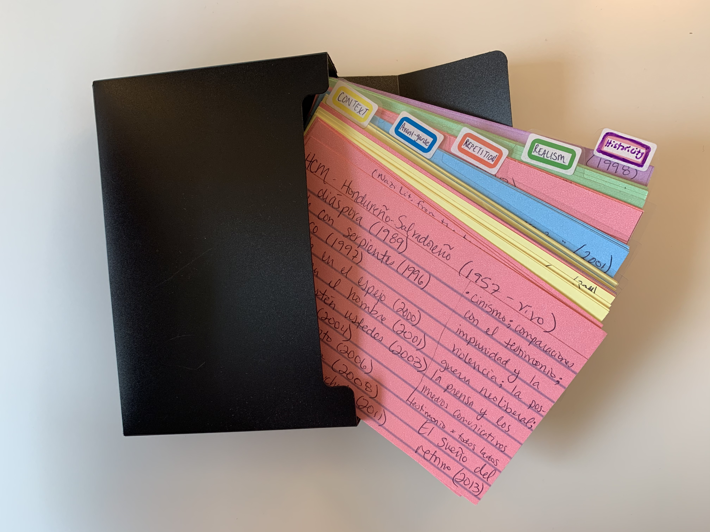

The Comprehensive Exam
This post is for PhD students who are composing the reading lists for comprehensive exams. Below are tips and best practices from my experience and that mentors, colleagues, and students have shared with me.
Before considering general advice, it is important to remember two things. First, always check your program’s guidelines. There are many program-specific expectations, such as the number of texts that should be included on a reading list, the distribution of texts across each list, etc. Likewise, it is important to understand your supervisor’s expectations. S/he will provide instructions and guidance that no doubt align with the program’s expectations, but may also go beyond those. This is a good thing, as the program requirements are a minimum, but your supervisor has experience and knowledge that is (1) field specific and (2) tried and tested with other students.
Exam Reading Lists
What are they? What are they for?
In my institution (French, Hispanic and Italian Studies at UBC), the comprehensive exam reading lists are meant to prepare students to be both a generalist in a broad field and a specialist in their chosen specific field. Composing the lists, reading the works, and completing the exam should move you toward a successful experience during the proposal phase of the PhD and, of course, contribute to the composition of the dissertation. The lists, prepared in consultation with the supervisor and committee, will necessarily be broader than the area covered by your dissertation, as they are comprised of both primary works and critical / theoretical texts that relate to your particular research interests, as well as an applicable wider context.
This broader context is important for a variety of reasons. First, you will be expected to teach outside of your specialty, and coursework and the comprehensive exams (as well as the MA) will contribute to making you a well-rounded scholar. Second, and most immediately pertinent, you must be able to situate your area of specialization in a broader context, to signal precursors, formal innovations, and literary dialogues. Finally, you will eventually need to articulate a second project (once you have that tenure-track position and are making progress on turning the dissertation into a book manuscript!), and having a basis in a broader context will help you make inroads on thinking about that second monograph.
Composing the lists requires students to understand their research interests and have a general sense of where the dissertation is going (I purposely put that in the present progressive… the dissertation is already cooking when you’re at the comprehensive exam stage!). The lists will also take various rounds of revisions between you and your supervisor, and then you and your committee members. This can be frustrating, but it’s part of the process, and ideally you will better understand how projects coalesce as a result of the process. Most importantly, having solid lists that relate to your future project will facilitate each of the subsequent stages (proposal, dissertation, monograph).
Before You Start
- #1 Rule: check your program-specific guidelines and your supervisor’s expectations.
- Know the topic of each list (at my institution these are “general” and “specific” fields + critical texts/theory), how many works should be on each list, what the exam will look like, and the timeline and pertinent deadlines for your program.
- Request examples of successful reading lists from your program. You should check with the Graduate Studies Director, who can provide you with examples or direct you to students who might be willing to share their lists.
- Before you begin composing the lists, you should be able to articulate your research interests and define the tentative direction the dissertation will take. Some questions you should be able to answer: What time period and region / countries do you plan to study? What are the primary critical / theoretical disciplines you will engage with? Who are some of the principle authors you will write about? What are the genres / literary movements that interest you? What methodological approaches will your research entail?
- If you are reading this entry early in your PhD journey, begin thinking about how your coursework may be completed so as to be useful for the dissertation. For instance, if you have flexibility to choose the topic / texts of a final paper, select something that you may want to work on during the dissertation. If you’re lucky, you might even walk away from coursework with an early version of a chapter.
- I encourage my students to think about potential dissertation chapters as early as possible and, to the best of their ability, to write tentative chapter abstracts as soon as topics and research questions emerge. These chapter abstracts may be very schematic and will likely change through the proposal phase and dissertation writing. However, having a tentative idea of what your chapters will look like will help you see through-lines emerge in your research interests and may point you in the direction of what type of theoretical texts and literary criticism will be useful for your project. You may have a clear idea about one chapter, a vague notion of two other chapters, and no idea what will go in the final 1-2 chapters, but keeping what you do know in mind at this early stage will help you begin putting together your lists and defining your framework.
Compiling Your Lists
- See the entry, “Compiling a High-Quality Bibliography” for my tips on how I locate and select secondary / critical texts.
- Although reading list composition is primarily your task as the student, seek input from your committee chair regularly.
- Chat with other graduate students, particularly those who worked with your committee members, to hear about their experience and solicit advice.
- For primary texts, I encourage students to include both canonical and lesser known works. This will ensure that you are participating in important scholarly conversations, but also bringing something new to the table.
- The secondary readings (literary criticism, theory) should be primarily comprised of works written in the past twenty years, although you will absolutely need relevant canonical works. You should be able to demonstrate knowledge of major trends across time and current debates in recent years (state of the field).
- Although it may be tempting to include many texts that you have already read, think of comps as a chance to read widely and expand your knowledge free from other obligations (I recognize you will likely be working as a TA or RA, but you are not yet writing the dissertation). The more texts you have read on your topic as you begin the dissertation writing process, the better off you will be. That said, being strategic is also important and graduating is the first step to getting a job. In short, balance is key.
- Once your chair approves your lists and communicates that they are ready to be revised by the committee, send the members a copy and request their feedback.
- Speak with your committee members individually or collectively to clarify any ambiguous or confusing feedback.
- Some questions to ask yourself before sending the list for review by your chair/committee: Do I include an array voices (women, authors of colour, queer writers, etc.) in all three lists? In terms of theoretical texts, what schools am I including (North American, European, Latin American, Indigenous, etc.)? Are there any major debates from the time period that I have forgotten? Can I articulate why I choose these texts and why I excluded others?
How to Study and Prepare for the Exam
Studying and preparing for your comps is necessarily an individual process. However, here are some tried and true practices that may help you prepare. * Be organized and have a system. Start a Google Doc or keep a notebook. Take notes as you read. Make succinct summaries of works. Include keywords. Have a highlighting system. * I kept notecards with important details, major themes and formal devices, keywords, and relevant dates. I’d flip through these notecards on commutes or when killing time before meetings. * Save entries in MLA style (or whatever formatting style you agree on with your supervisor). Having a well formatted bibliography is key to presenting your work as polished and professional. These should be fully formatted each time you submit your lists to your supervisor or committee (messy lists are less likely to be approved). * Request examples of past comps questions to understand what kind of questions are asked. Check with the Graduate Studies Director. * Create practice questions for yourself. Begin putting primary texts into dialogue with one another, with the literary tradition, with your critical texts, etc. * Some members of my PhD cohort dictated oral notes that they then converted to searchable text via a transcription program. * As you read, attend to key debates in your fields. You will recognize these debates as topics that emerge across critical works and that are at the centre of scholarly conversations. You should be able to rehearse critical debates and articulate your opinion on where you stand in relation to other scholars. * Remember that the exam is NOT an end in itself. It is meant to prepare you for the proposal stage and dissertation writing. You should take notes about possible chapter topics, what literary works would pair well with particular critical texts, ideas for the introduction, common threads in the different literary texts, etc. The more notes you have in this regard, the quicker the proposal and dissertation should come together!
FHIS-specific Advice
After chatting with colleagues at UBC, here is advice meant specifically for students in FHIS * Regarding the number of texts on each list, this is a common format: 1) General Field: 40 works; Minor Field: 20-25 works; Theory: 15-20 works. But the distribution is flexible. * The major field identifies the principal field of interest in terms of geography (national and/or global terms), time frame, and maybe further criteria such as genre, approach, movement, specific theoretical framework, etc. * The minor field identifies the specifics of the dissertation sub field, homing in on particularities within the major field. The minor field could be creative. * For both composing the lists and for the actual exam, it is wise to focus on the relational aspects of the two fields, how they dialogue, intersect, diverge, etc. * In terms of thinking about what makes for a solid exam performance, it is difficult to say exactly, however, here are some good characteristics to keep in mind: Breadth of knowledge and specificity. Development of a coherent argument in each essay. How well you know and engage with the lists. How well you apply the theoretical texts to the primary works. How well you address the questions posed. * In terms of format of the exam, FHIS students receive 3 possible questions (created by the student’s Exam Committee) and must respond to two of these essays over the course of 2 weeks. Each essay should be around 5000 words. The committee then reads the essays and a 1-hour oral defence is scheduled.
(Many thanks in particular to Professors Kim Beauchesne and Alessandra Santos for sharing their wisdom for this section!)
The Day of the Exam
My PhD program (Indiana) had a one-day exam in which students wrote two essays (selected from 4 options) in two 4-hour blocks. If that is the format of your exam, here are some tips for how to best prepare yourself for writing your one-day comps. * Although reviewing material may be useful (and might help calm your nerves), try not to read anything new the day before and the day of your comps. Relax, eat well, get some rest. * On the day of the exam, eat a good breakfast, stay hydrated, and bring snacks to the exam. I had a whole kit with Advil, water, snacks, earplugs, gum, tissues, rubberbands to pull my hair back… basically anything that I thought I might want. This kept me calm and kept my energy up. * If your exam occurs during the academic year and you are working as a TA or an RA, let your supervising professor know about the exam and request the day before, of, and after the exam off. Ideally, this will not an issue, as your Department should be invested in your success and well-being. (If you are a TA, it would be wise to make sure that your exam does not fall on a week when your supervising prof does need you) * When you begin your exam, read the questions slowly and at least twice before beginning to respond. MAKE SURE YOU RESPOND TO THE QUESTION POSED. Not tightly responding to the question asked is one of the primarily reasons that students might fail an exam.
 A trip down memory lane: Colour-coded notecards from Tamara’s comps.
Your Comps
Each student’s experience with comps will differ based on their particular interests, their study habits, their relationship with the supervisor and committee, etc. The advice here is meant to be a general resource, but you no doubt will (and should!) develop your own approach to both composing and preparing for comps. Comps can be a stressful experience, but, in the best of circumstances, this should be an exciting stage of the PhD, as you should be principally dedicated to becoming familiar with foundational works related to your research interests and developing the project that will become the dissertation.